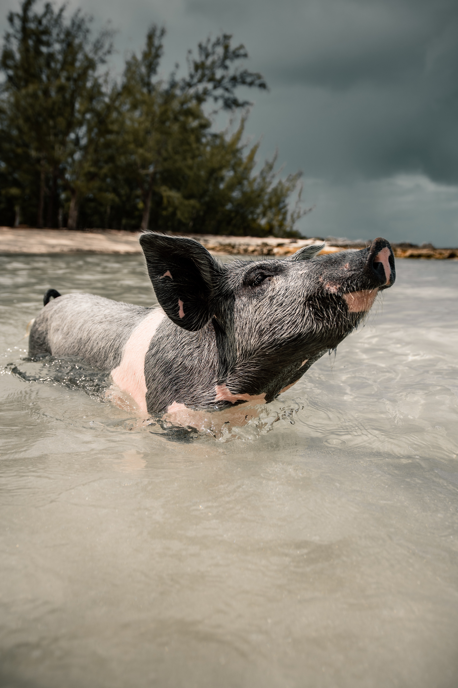
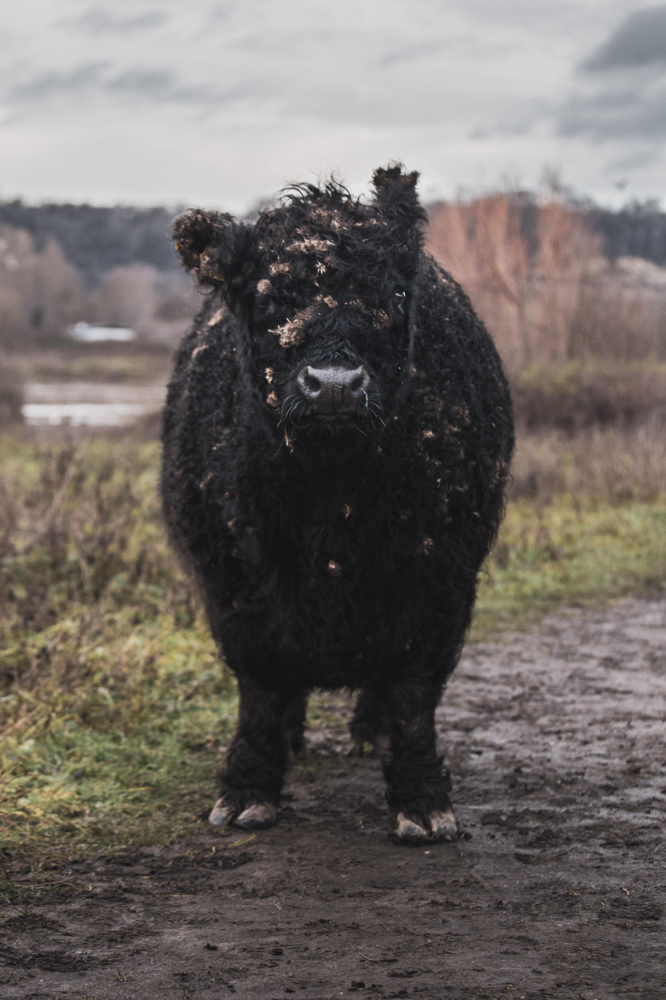

Some random cows for your enjoyment.

This cow's name is Jim. He likes to play pickle ball I hear.

Everyone loves Jerry. He's known for his jolly spirit, and good sense of humor.

Baaah, it's Sherry! She may look like a sheep, but don't let her fool you!

I've run out of descriptions for cows. So I'll leave this one up to your imagination.